Ogni stagione scegliamo i modelli che vanno di più.
Filtra per categoria e vedi solo quello che cerchi.
Filtra per categoria
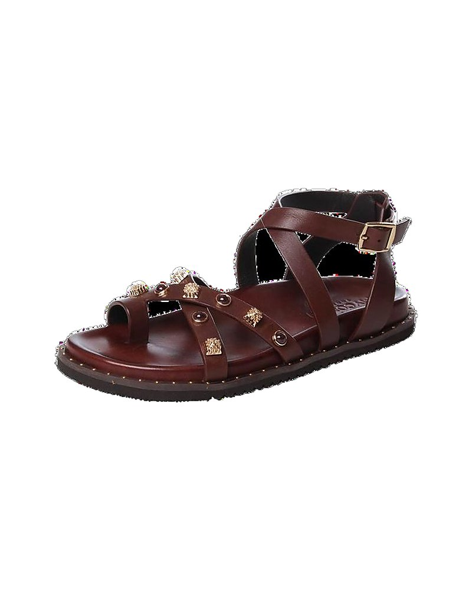
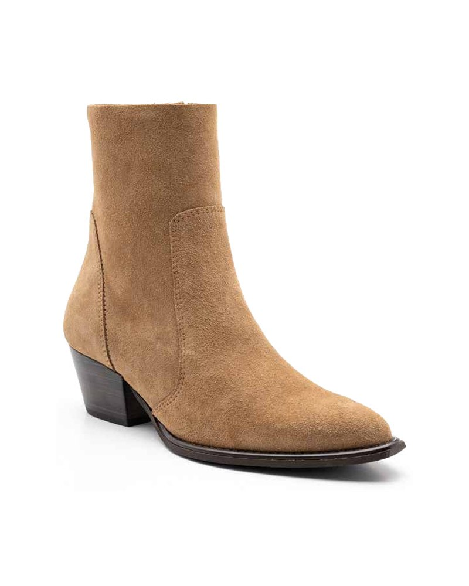
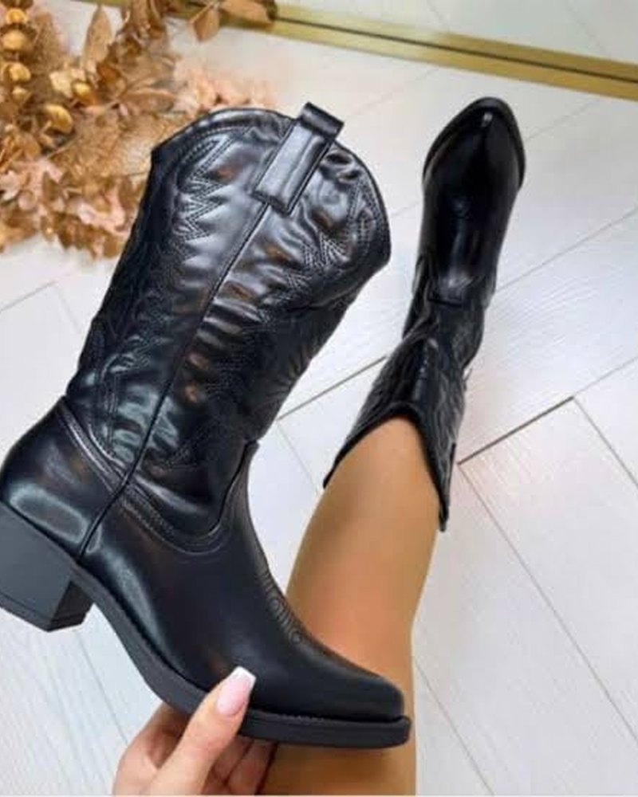
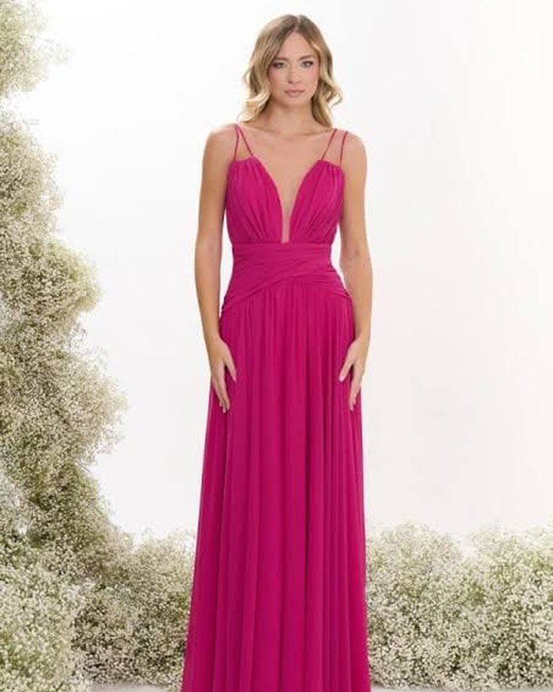
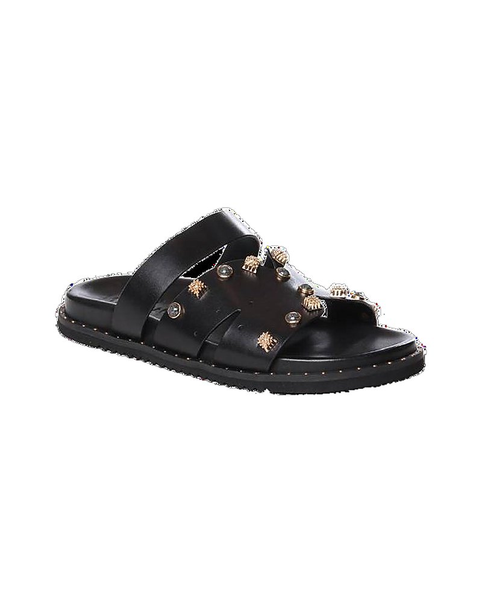
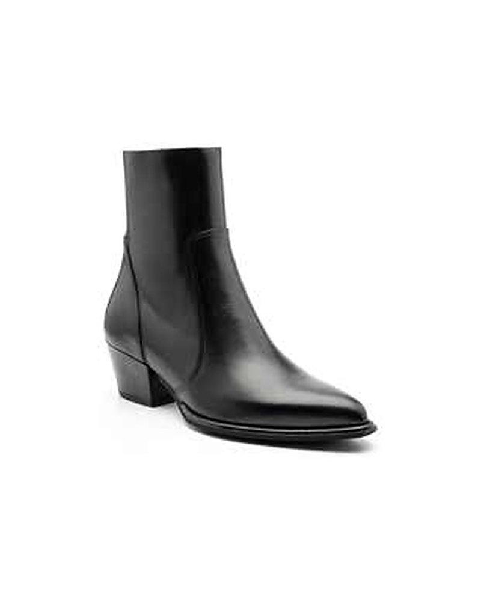
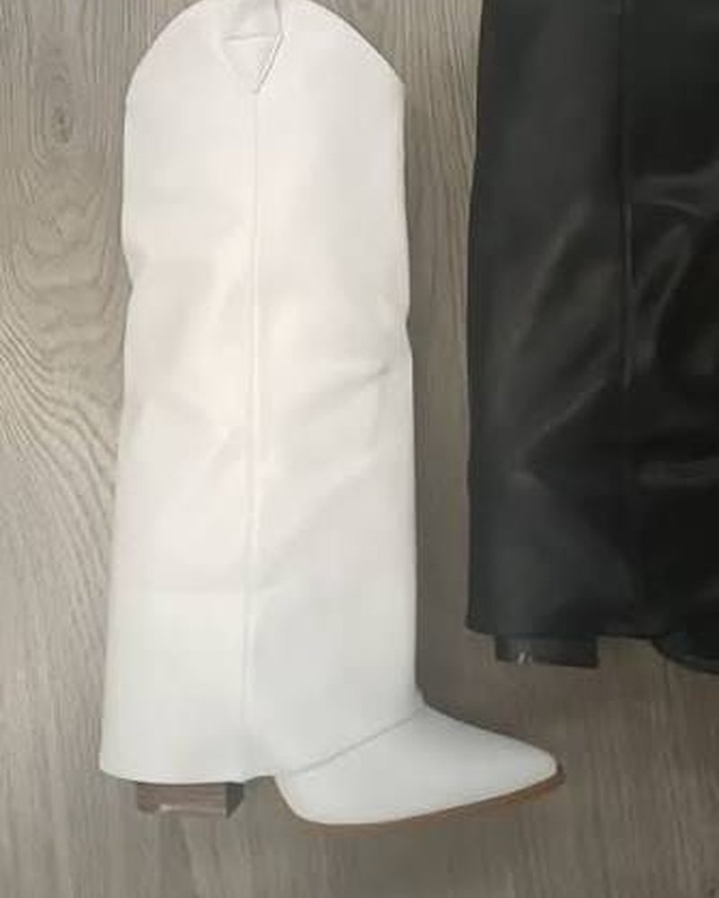
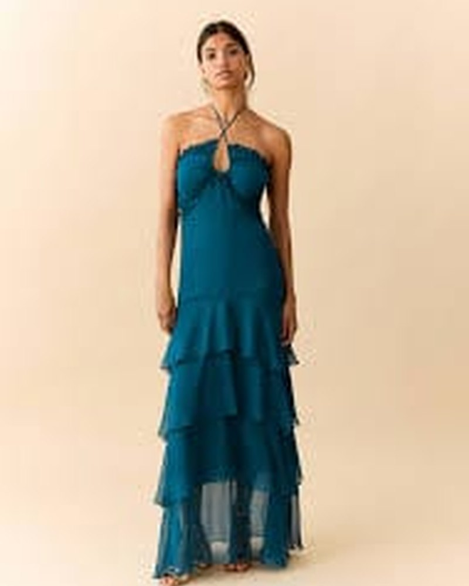
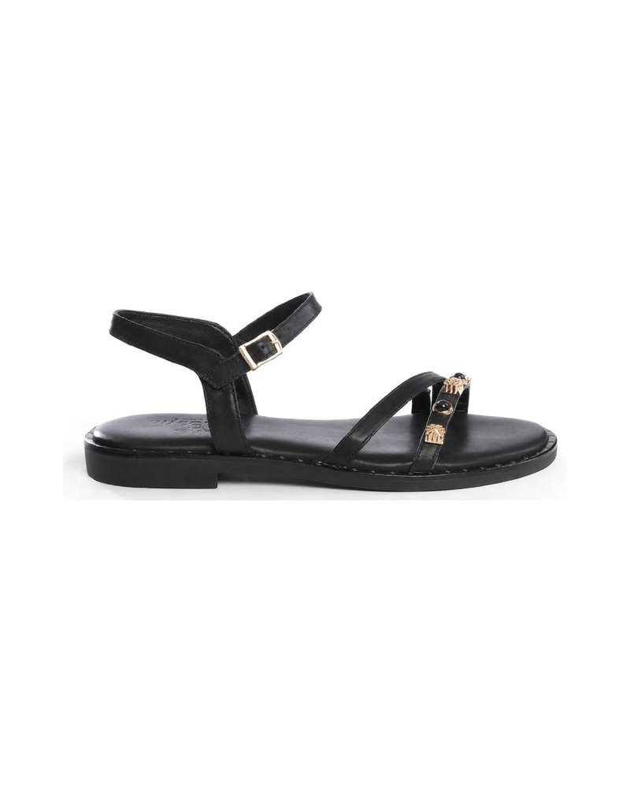
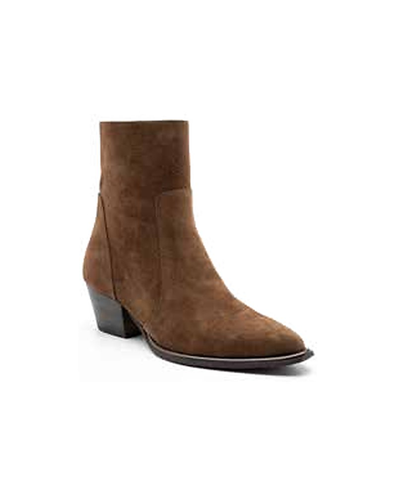
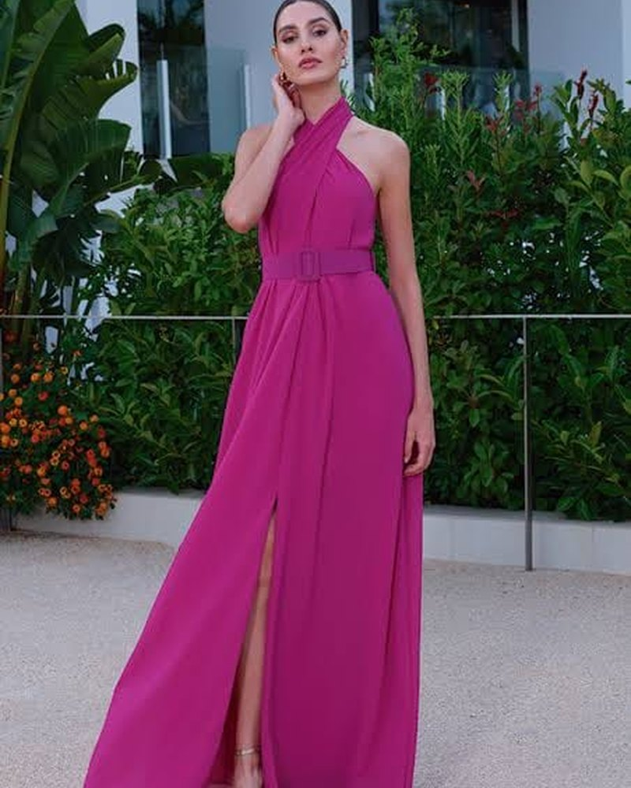
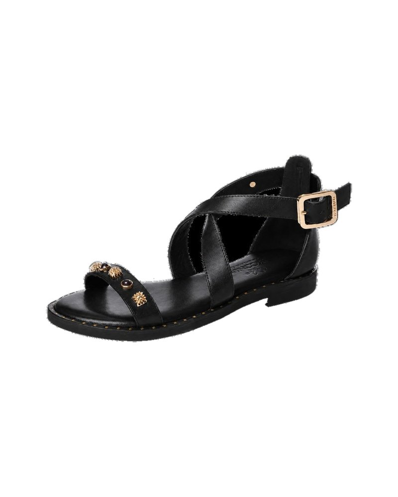
Dicci il numero che porti di solito e con quale scarpa ti trovi bene.Ti diciamo noi quale misura ordinare.